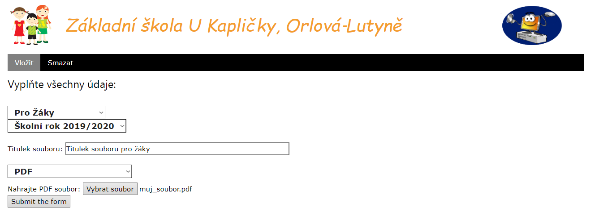
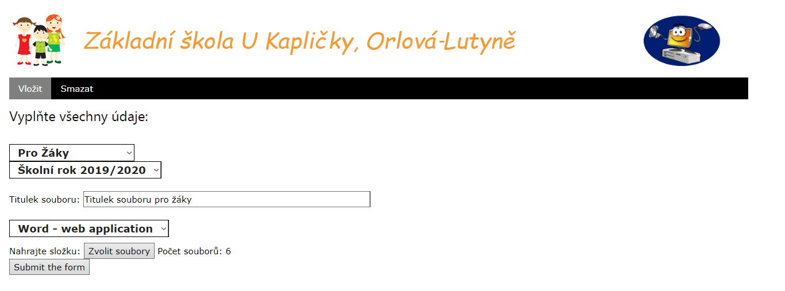

Dokumentace
Jak nahrát článek
Po přihlášení do systému se zobrazí stránka s lištou, kde je možno znovlit mezi vložením a odebráním článku.
Po vybrání záložky vložit se zobrazí první pole. Po jeho vyplnění se postupně zobrazí další pole. Článek lze nahrát pouze pokud jsou všechna políčka vyplněna.
Nahrání PDF
Pro nahrání PDF stačí nahrát PDF z počítače. Po kliknutí na tlačítko "Submit the form" se článek nahraje.

Nahrání dokumentu ve Wordu
Dokument je nutné nejdříve uložit ve formátu, který je pak stránka schopná zobrazit.
Jak uložit dokument ve Wordu:
- Vytvořte v počítači složku, kam uložíte soubory, které Word vygeneruje.
- Otevřete Vámi zvolený dokument a zvolte možnos "Uložit jako".
- Vyberte možnost "Webová stránka" a uložte nové soubory do složky, kterou jste dříve vytvořili.
Na stránce zvolte možnost "Word - web application". Nahrajte složku, kterou jste vytvořili. Nevybírejte žádný konkrétní soubor.
Po kliknutí na tlačítko "Submit the form" se článek nahraje.
